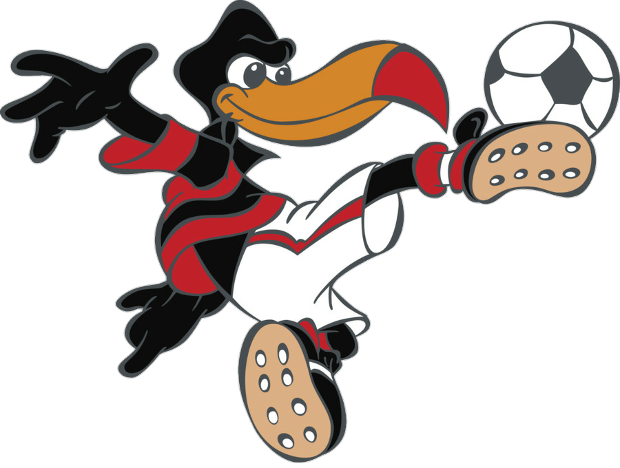

Qual foi o primeiro mascote do Flamengo? Por incrível que pareça, mas o primeiro mascote do Mengão foi o Popeye. Sim, ele mesmo, o cômico personagem do famoso desenho animado americano, que ficava incrivelmente forte quando comia espinafre para quase sempre salvar a Olívia Palito das mãos do Brutus.O Popeye se tornou Rubro-Negro durante o Campeonato Carioca de 1942.
Como o urubu se tornou mascote do Flamengo? Como todos sabem o urubu é uma ave sempre lembrada por sua aparência feia e impopular. Por ter penas que são majoritariamente pretas, a ave era usada como um insulto por torcedores de clubes rivais, até mesmo como uma forma de racismo. Contudo, um grupo de torcedores do Flamengo resolveram adotar o animal como seu mascote como uma respostas a estas ofensas dos rivais. Então, no dia 31 de maio de 1969, diante de milhares de torcedores, uma bandeira do Flamengo foi amarrada em um urubu no meio do gramado e, com o barulho da torcida, a ave se assustou e sobrevoou o estádio com a bandeira e a os torcedores foram a loucura aos gritos de: “Uh é urubu! É ububu!”
